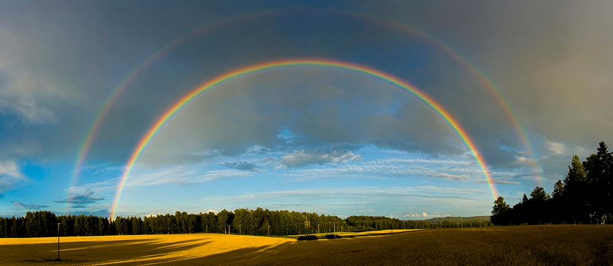

Today's Weather Story for the 'Peaks' Area
Firefighters urge responsible use of fireworks
With the Fourth of July weekend just around the corner, the desire to buy and light fireworks
is growing. Inappropriate use of fireworks, combined with dry vegetation and hot weather, substantially
increases our local potential for unwanted fires. Firefighters in eastern Idaho are urging Idaho
residents to recreate responsibly this summer and only use fireworks legally and wisely.
Fire officials are concerned that with the cancellation of many local firework displays, people may
choose to celebrate at home or on public lands. “It’s highly probable with the number of firework sales
occurring in the area, that many individuals are choosing to have personal celebrations,” said
Caribou-Targhee National Forest Fire Management Officer Mike Johnston. “More fireworks equal the
potential for more fire activity.” While safe and sane fireworks are allowed in some jurisdictions
everyone needs to follow safety precautions. As a reminder, fireworks are illegal on public lands.
Every summer, improper use of fireworks results in multiple wildland and structure fires. In 2018, two
homes in Pocatello were significantly damaged in a matter of minutes from illegal fireworks. The 2017
Rapid Creek and Henry’s Creek fires burned nearly 53,000 acres because of illegal fireworks. Even though
fireworks are illegal on public lands, every year, Idaho Falls District BLM law enforcement seize
hundreds of illegal fireworks over the Fourth of July holiday.
As the Fourth of July nears and the weather turns hotter and drier, please use “safe and sane” fireworks
in gravel or asphalt areas away from vegetation and buildings. Safe and sane fireworks or “non-aerial
common fireworks” remain near the ground and do not travel outside a 20-foot diameter. Safe and sane
fireworks include cone fountains, sparklers, wheels and whistles.
Other fireworks, typically aerial ones, are illegal to shoot off in Idaho. Aerial fireworks present a
huge risk for causing wildfires. While these kinds of fireworks may be purchased legally, Idaho law
makes their use illegal. Illegal-use fireworks include bottle rockets, sky rockets, roman candles,
firecrackers, missiles, parachutes, sky flyers, display shells and aerial items.
Always follow applicable fireworks regulations, including:
Find the entire story @: Preston Citizen